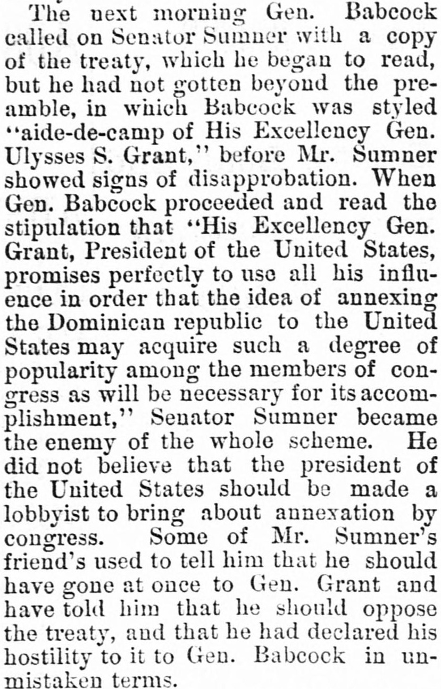
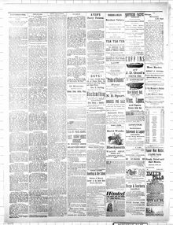

Popularity among the members of congress as will be necessaryPopularidad entre los miembros del Congreso como será necesaria
Morris Tribune. Morris, Minn., November 18, 1885. Page 4. Published by W. J. Munro. A weekly newspaper, 1880–2000.Morris Tribune. Morris, Minn., 18 de noviembre de 1885. Página 4. Publicado por W. J. Munro. Periódico semanal, 1880–2000. View the originalVer el original


See the full pageVer la página completaThe newspaper reported that Senator Sumner opposed the annexation scheme and the acquisition of the port of Samana in San Domingo because he believed the U.S. President should not act as a lobbyist for it. Furthermore, Senate sycophants and troublemakers worsened relations between Sumner and General Grant by exploiting their differing views on the president acting as a lobbyist and the acceptance of gifts by public men.El periódico consignó que el senador Sumner combatió la maniobra anexionista y la adquisición de la bahía de Samaná en Santo Domingo al considerar impropio que el jefe de Estado estadounidense obrara como cabildero del proyecto. Por añadidura, intrigantes y aduladores senatoriales profundizaron el distanciamiento entre Sumner y el general Grant explotando sus divergentes criterios sobre las gestiones oficiosas de un mandatario y la aceptación de dádivas por servidores públicos.
FULL TEXT:TEXTO COMPLETO:
The next morning Gen. Babcock called on Senator Sumner with a copy of the treaty, which he began to read, but he had not gotten beyond the pre-amble, in which Babcock was styled "aide-de-camp of His Excellency Gen. Ulysses S. Grant," before Mr. Sumner showed signs of disapprobation. When Gen. Babcock proceeded and read the stipulation that "His Excellency Gen. Grant, President of the United States, promises perfectly to use all his influence in order that the idea of annexing the Dominican republic to the United States may acquire such a degree of popularity among the members of congress as will be necessary for its accomplishment," Senator Sumner became the enemy of the whole scheme. He did not believe that the president of the United States should be made a lobbyist to bring about annexation by congress. Some of Mr. Sumner's friend's used to tell him that he should have gone at once to Gen. Grant and have told him that he should oppose the treaty, and that he had declared his hostility to it to Gen. Babcock in un-mistaken terms.A la mañana siguiente el general Babcock visitó al Senador Sumner con una copia del tratado, que comenzó a leer, pero no había pasado del preámbulo, en el que Babcock era intitulado «edecán de Su Excelencia el general Ulysses S. Grant», antes de que el Sr. Sumner mostrara signos de desaprobación. Cuando el general Babcock procedió y leyó la estipulación de que «Su Excelencia el general Grant, Presidente de los Estados Unidos, promete perfectamente usar toda su influencia a fin de que la idea de anexar la república dominicana a los Estados Unidos adquiera tal grado de popularidad entre los miembros del congreso como será necesaria para su logro», el Senador Sumner se convirtió en enemigo de todo el plan. No creía que el presidente de los Estados Unidos debiera ser hecho un cabildero para lograr la anexión por el congreso. Algunos de los amigos del Sr. Sumner solían decirle que debería haber ido de inmediato al general Grant y haberle dicho que se opondría al tratado, y que había declarado su hostilidad hacia él al general Babcock en términos inequívocos.
This collection gathers the coverage of the Dominican Republic in the American press, in the order it was published.Esta colección reúne la cobertura de la República Dominicana en la prensa estadounidense, en el orden en que se publicaron.